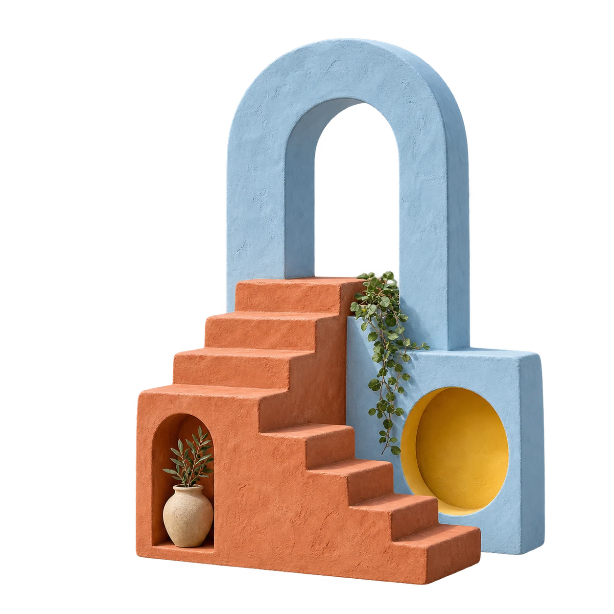

morrow
A little plan. Plenty of possibility.
Take it slow
Stay curious
A day worth
wandering.
Good coffee. A wrong turn.
A small plan for a lovely day.

5
good places.
one easy day.
Morrow made a little plan
↗
100%
Unfold the day ↓
Pause
Replay ↗
Leave a little
room for
serendipity.